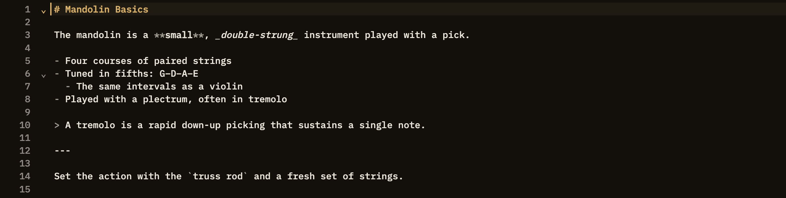

Docs/Editor/Markdown formatting
Markdown formatting
You write notes in Minerva using markdown — plain text with a few simple marks that turn into formatting. This page is a quick reference: the mark you type on the left, what it becomes on the right. The everyday basics are covered in full here; richer content links out to its own page.
The basics
Headings, emphasis, lists, quotes, and inline code work the way you'd expect from markdown.
# … ######Headings, from large to small —
# H1, ## H2, and so on down to six levels. You can jump straight to any heading from another note with a link like [[note#heading]]. See Links.**bold** / __bold__Either style gives you bold text.
*italic* / _italic_Either style gives you italic text.
- item / * item / 1. itemBulleted lists (start a line with
- or *) and numbered lists (a number followed by .). Indent an item to tuck it under the one above. Start an item with [ ] or [x] and it becomes a checkbox you can tick — see Task lists.> quoted textA quote, set off with a line along the left edge. Begin the first line with a tag like
[!note], [!tip], or [!warning] and it turns into a titled, colored callout instead. See Callouts.---Three dashes on their own line draw a horizontal divider. (Three dashes at the very top of a note instead start a properties block.)
`inline code`Wrap a word in backticks for
inline code in a monospaced font.code cells
Set off a block of code and label it with a language for syntax coloring. Label a cell
sparql, sql, or python and you can run it, with the result written back into the note. See Code & compute cells.
Everything else
Type
[[Note Title]] to link to another note; ordinary [text](url) web links work too. A link can also carry a relationship, like supports or rebuts.Drop in an image with
. It shows inline and enlarges when clicked.Build a table with rows of cells separated by
| bars. Minerva also treats each table as data you can query.Drop a marker like
[^1] in your text and define it anywhere in the note; the definitions gather at the bottom.Wrap text in
==double equals== to give it a highlighter tint.A list item that starts with
[ ] or [x] becomes a checkbox you can click to mark done.Write mathematical notation between
$ for inline or $$ for a centered formula.Describe a flowchart, sequence diagram, and more in a diagram cell and Minerva draws it for you.
Add a chart cell to turn your data into an interactive graph, optionally fed by a live query.
A quote that opens with a tag like
[!tip] becomes a titled callout box; [!card] makes a two-sided flashcard.Write structured facts directly in a note and Minerva folds them into your knowledge base.